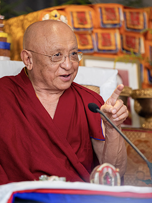

Project Team
Contemplatives, academics, and innovators —
together creating Kremsegg
A world-renowned teacher whose lineage gives the university its roots, and a scholar of international standing who holds full academic authority. Decades of shared work between them.
The founding team includes one of the most respected Buddhist teachers of our era, whose vision and lineage give the university its deep roots, and a scholar of international standing with decades of experience in contemplative science. Their collaboration is not new. It grows out of decades of shared work in the institutions that pioneered exactly the kind of education this university now extends.

Spiritual Guide
Chökyi Nyima Rinpoche
Chökyi Nyima Rinpoche is a world-renowned teacher and meditation master in the Kagyu and Nyingma traditions of Tibetan Buddhism, and the inspiration from whom this university draws its deepest vision. Born in Tibet in 1951 as the eldest son of the revered Dzogchen master Tulku Urgyen Rinpoche, he was recognized in early childhood as the seventh incarnation of the meditation master Gar Drubchen, and studied under some of the most illustrious teachers of the age, including the 16th Karmapa and Dilgo Khyentse Rinpoche. Since 1976 he has been abbot of Ka-Nying Shedrub Ling, one of Nepal’s largest monasteries, near the Great Stupa of Boudhanath in Kathmandu.
Rinpoche’s life has been devoted to a single aspiration that this university now carries forward: that contemplative wisdom be made genuinely available to the modern world, with rigor and without dilution. In 1997 he founded the Rangjung Yeshe Institute, which combined traditional shedra training with contemporary academic scholarship and, in partnership with Kathmandu University, became an accredited center granting degrees in Buddhist studies. He has established a global network of Gomde meditation centers — including in Austria — and Dharma House city centers across Europe, the Americas, and Asia, and through the Shenpen charitable foundation has supported education, health, and disaster relief in Nepal for decades. He is the author of many books, among them Present Fresh Wakefulness and Sadness, Love, Openness, and is known the world over for the warmth, humor, and directness of his teaching.
Kremsegg University is founded in his lineage and his vision. He serves as its Spiritual Guide, while the university maintains full academic freedom under the governance of its Rector and faculty.
Founding Rector
Professor John Dunne
John Dunne (PhD, Harvard University) currently holds the Distinguished Chair in Contemplative Humanities at the Center for Healthy Minds at the University of Wisconsin–Madison, where he is also a distinguished professor in the Department of Asian Languages & Cultures and recently served as department chair. He is the Director of the Kremsegg University Project and will serve as the Founding Rector.
For more than two decades, Professor Dunne’s scholarship has done precisely what this university is built to do: hold Buddhist philosophy and contemplative practice in rigorous dialogue with cognitive science. His more than fifty publications range across both the humanities and the sciences — from technical studies of Buddhist epistemology to widely read work on the nature of mindfulness and contemplative practice — and include Foundations of Dharmakīrti’s Philosophy and his contributions to Science and Philosophy in the Indian Buddhist Classics: The Mind, a volume produced in collaborative effort guided by His Holiness the Dalai Lama.
Professor Dunne has decades of experience in higher education, including leadership positions, and he has likewise engaged in broader efforts to bring contemplative insights to other domains, especially through the Mind and Life Institute, where he has served on the board of directors, and Mind and Life Europe. He likewise has served for two decades as an academic advisor to the Rangjung Yeshe Institute in Kathmandu — the institution founded by Chökyi Nyima Rinpoche that first joined traditional monastic study to accredited modern scholarship. He has long taught within this lineage, including at the Gomde centers of Austria and Denmark. His appointment as Founding Rector is therefore the deepening of a relationship, not the beginning of one.
Under Professor Dunne’s leadership, Kremsegg University maintains complete academic freedom and professional academic governance.
Advisor to the Project Director
Dr. Andreas Doctor
Andreas was a founding member of the Rangjung Yeshe Institute, where he spent fifteen years teaching, and for most of this period he served as director of studies at Kathmandu University’s Centre for Buddhist Studies. He is currently the editorial co-director at 84000: Translating the Words of the Buddha.
The Wider Circle
Advisory Council, Consultants & Collaborators
A global network of scholars, scientists, and practitioners who advise and collaborate on the university’s development. Biographies are being added as the network is formalized.
Advisory Council
Lara Bezerra
Biography forthcoming.
Mr. Tom Erickson
Tom Erickson is the founding director of the School of Computer, Data & Information Sciences (CDIS) and the Executive Associate Dean of Strategy and Innovation for the College of Letters & Science at the University of Wisconsin–Madison.
Consultants
Scott Davis & Colleen Lowe
Market Research
Biography forthcoming.
Dr. Achim Hopbach
Achim has 25 years of experience in higher education reform and quality assurance. He served as Managing Director of the Agency for Quality Assurance and Accreditation Austria (AQ Austria) from 2012 to 2019, and of the German Accreditation Council from 2005 to 2012.
Mark Kiss
Biography forthcoming.
Collaborators
Geoffrey Barstow
Geoffrey Barstow is Associate Professor of Religious Studies at Oregon State University, specializing in Tibetan Buddhism and Buddhist ideas about animal ethics and vegetarianism. An early graduate of the Rangjung Yeshe Institute and a longtime student of Chökyi Nyima Rinpoche, he is the author of Food of Sinful Demons: Meat, Vegetarianism, and the Limits of Buddhism in Tibet. (Draft — please verify; listed as “Jeffrey.”)
Laura Candiotto
Laura Candiotto is a philosopher of emotion and Associate Professor at the Centre for Ethics of the University of Pardubice. Her work bridges social epistemology, 4E cognition, and — as a practitioner of Tibetan Buddhism — the transformation of emotion through contemplative practice. (Draft — please verify.)
Dr. Catherine Dalton
Catherine is an Assistant Professor at Kathmandu University’s Centre for Buddhist Studies at the Rangjung Yeshe Institute, where she teaches in RYI’s MA program in Translation, Textual Interpretation, and Philology. She also serves Chökyi Nyima Rinpoche as an oral interpreter.
Mr. Jack DeTar
Jack is the Shedrub Mandala Coordinator for Chökyi Nyima Rinpoche’s centers and activities, and the Executive Director of Rangjung Yeshe Gomde California.
Dr. Thomas Doctor
Thomas is the Principal and a Research Professor at Kathmandu University’s Centre for Buddhist Studies at the Rangjung Yeshe Institute.
Dr. Douglas Duckworth
Douglas Duckworth is Professor of Religion at Temple University, and a prolific author on the subjects of Buddhist history and philosophy.
Dr. James Gentry
James is Assistant Professor of Religious Studies at Stanford. He specializes in Tibetan Buddhism, with particular focus on the literature and history of its Tantric traditions.
Adam Goldstein
Adam Goldstein is co-founder, chairman, and head of research at Softmax, where he develops approaches to AI alignment grounded in living systems. He has taken part in dialogues on an engaged Buddhist response to artificial intelligence. (Draft — please verify.)
Gábor Karsai
Gábor Karsai is a Hungarian philosopher, scholar of religion, and dharma teacher who serves as Rector of the Dharma Gate Buddhist College in Budapest — the university’s accrediting partner — and as director of Mind & Life Europe. (Draft — please verify.)
Dr. Ana Cristina Lopes
Ana Cristina is an associate translator and researcher at 84000: Translating the Words of the Buddha. She held an appointment as visiting scholar at Stanford University’s Center for South Asia, and was faculty at the University of Virginia and the University of North Carolina at Greensboro.
Antoine Lutz
Antoine Lutz is a director of research at INSERM in the Lyon Neuroscience Research Center and a pioneer in the neuroscience of meditation. Trained with Francisco Varela and later with Richard Davidson, his work focuses on the neurophenomenology of mindfulness and compassion practice and their effects on attention, emotion, and consciousness. (Draft — please verify.)
John Makransky
John Makransky is Professor of Buddhism and Comparative Theology at Boston College and a lama in the Nyingma tradition. He serves as a senior advisor and lecturer at Chökyi Nyima Rinpoche’s Centre for Buddhist Studies, and developed the Sustainable Compassion Training model. (Draft — please verify.)
Chiara Mascarello
Chiara Mascarello is a researcher in the Department of Asian and North African Studies at Ca’ Foscari University of Venice, working across Buddhist studies, contemplative studies, and contemplative education. Her research explores the Indo-Tibetan understanding of the nature of mind and mind training and its relevance today. (Draft — please verify.)
Dr. Klaus-Dieter Mathes
Klaus is currently a Professor and Program Coordinator at the University of Hong Kong’s Centre of Buddhist Studies, and previously served as head of the Department of South Asian, Tibetan and Buddhist Studies at the University of Vienna.
Dr. Sara McClintock
Sara is a Buddhist philosopher and scholar of religion, currently serving as Associate Professor at Emory University.
Alexander von Rospatt
Alexander von Rospatt is the Catherine and William L. Magistretti Distinguished Professor in South and Southeast Asian Studies at UC Berkeley and Director of its Group in Buddhist Studies. He specializes in the doctrinal history of Indian Buddhism and in the living Newar Buddhist tradition of the Kathmandu Valley. (Draft — please verify.)
Otto Scharmer
Otto Scharmer is a senior lecturer at MIT and co-founder of the Presencing Institute. He originated Theory U and the practice of “presencing” — a framework for leading and learning from the emerging future that has reached a global community of practitioners. (Draft — please verify.)
Tenzin Seldon
Tenzin Seldon is a Tibetan-American social entrepreneur and investor, and the first Tibetan-American Rhodes Scholar. She is the founder and managing partner of Pulse Fund and a co-founder of The Plant, working at the intersection of climate, capital, and community. (Draft — please verify the intended individual.)
Dr. Julia Stenzel
Julia is the Director of Studies and an Assistant Research Professor at Kathmandu University’s Centre for Buddhist Studies at the Rangjung Yeshe Institute. She regularly participates in translation projects and is a member of the Sakya Pandita Translation Group, the Chödung Karmo Translation Group, and the Subhashita Translation Group.
Francesco Tormen
Francesco Tormen holds a PhD in philosophy and is an adjunct professor of Tibetan at Ca’ Foscari University of Venice. Co-director of the Italian Buddhist Union’s research center, he teaches in contemplative-studies programs at Padova and Pisa and writes on meditation, Tibetan thought, and lucid dreaming. (Draft — please verify.)
Khenpo Yeshi
Khenpo Yeshi is a scholar-practitioner who trained in the Geluk, Kagyu, and Nyingma traditions in Tibet and taught at the Rangjung Yeshe Institute, where he helped develop its curriculum on the five major treatises. He holds degrees from UC Berkeley, where he is a doctoral candidate researching the early Dzogchen Heart Essence tradition. (Draft — please verify.)
“Intelligence without compassion is dangerous. Compassion without wisdom cannot see the path forward.”Chökyi Nyima Rinpoche
Board & Advisory Council
How the university is governed: a clear separation of inspiration and authority, built to protect the mission for a hundred years.
Read about governanceAdvisors & Collaborators
Most academics join an institution. A very small number help build one. We are recruiting our founding faculty and collaborators now.
Express your interest